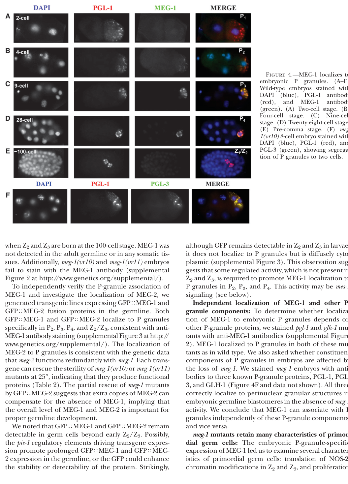

MEG-1 (maternal-effect germ cell defective 1; K02B9.1, UniProt Q21126) is an intrinsically disordered, serine-rich protein of the germ plasm in C. elegans embryos, encoded maternally and expressed in the P (germline) lineage from the 4-8 cell stage, with expression diminishing at the 100-cell stage. It is distantly related to, but functionally distinct from, the MEG-3/MEG-4 scaffold pair: whereas MEG-3/MEG-4 form the nanoscale clusters that scaffold and protect the PGL-1/PGL-3 P-granule core, MEG-1 (acting partially redundantly with its paralog MEG-2) associates with canonical P-body proteins (decapping and deadenylation factors) and is now understood to organize a SECOND, distinct germ-plasm condensate, the 'germline P-body', rather than to act as a core P-granule scaffold itself (Cassani & Seydoux 2022, PMID:36196602; Chiappetta et al. 2022 review). MEG-1 enriches at the periphery of P granules in the P1-P3 blastomeres and merges with perinuclear P granules in P4, then becomes cytoplasmic and is degraded in the primordial germ cells Z2/Z3. MEG-1/MEG-2-dependent germline P-bodies stabilize P-body components and regulate maternal mRNAs (including POS-1 targets), and are required to specify P4 as the germline founder cell; embryos lacking meg-1 and meg-2 mis-specify P4 and fail to develop a germline. MEG-1 is also a substrate of the MBK-2/DYRK kinase and the PP2A phosphatase complex (PPTR-1/PPTR-2): its phosphorylation state regulates P-granule phase transitions, with phosphorylation promoting disassembly of zygotic P granules in anterior cytoplasm and dephosphorylation promoting assembly/accumulation in posterior cytoplasm. Loss of meg-1 causes P-granule mis-segregation, underproliferation and aberrant morphology of larval germ cells, and maternal-effect sterility; it interacts genetically with the nanos family members nos-2 and nos-3. MEG-1 localization to P granules depends on the membrane-bound protein MES-1.
| GO Term | Evidence | Action | Reason |
|---|---|---|---|
|
GO:0036093
germ cell proliferation
|
IGI
PMID:25535836 Regulation of RNA granule dynamics by phosphorylation of ser... |
ACCEPT |
Summary: MEG-1 is required for germ cell proliferation during larval development. meg-1 mutants show underproliferation of germ cells (PMID:18202375). The IGI annotation with meg-3 and meg-4 reflects that MEG proteins contribute redundantly to germ cell viability and proliferation (PMID:25535836, PMID:21305687). MEG-1 may function with nanos family members nos-2 and nos-3 to promote germ cell proliferation.
Reason: This annotation is well-supported by multiple publications. PMID:18202375 states that meg-1 mutants exhibit underproliferation in larval germ cells. PMID:25535836 demonstrates that MEG proteins are required redundantly for fertility and germ cell development. The IGI evidence from genetic interactions with other MEG family members is appropriate.
Supporting Evidence:
PMID:18202375
meg-1 mutants exhibit multiple germline defects: P-granule mis-segregation in embryos, underproliferation and aberrant P-granule morphology in larval germ cells, and ultimately, sterility as adults
PMID:25535836
The MEG (maternal-effect germline defective) proteins are germ plasm components that are required redundantly for fertility
PMID:36196602
Embryos lacking meg-1 and meg-2 do not stabilize
P-body components, misregulate POS-1 targets, mis-specify the germline founder
cell and do not develop a germline.
file:worm/meg-1/meg-1-deep-research-falcon.md
Z2/Z3 primordial germ cells are present at hatching, but later larval germ-cell proliferation fails; blocking apoptosis (**ced-4**) does not rescue the loss, arguing against canonical apoptosis as the main cause.
|
|
GO:1903864
P granule disassembly
|
IGI
PMID:25535836 Regulation of RNA granule dynamics by phosphorylation of ser... |
ACCEPT |
Summary: MEG-1 in its phosphorylated form promotes P granule disassembly in the anterior cytoplasm of pre-gastrulation embryos. This is a key function of MEG proteins - phosphorylation by MBK-2 promotes granule disassembly while dephosphorylation promotes assembly (PMID:25535836). The annotation is supported by the finding that MEG-1 and MEG-2 knockdown results in defective P granule disassembly in anterior cytoplasm.
Reason: This annotation accurately captures a specific aspect of MEG-1 function. The phosphorylated form of MEG-1 promotes P granule disassembly. While MEG-1 also promotes assembly in its dephosphorylated form, the disassembly annotation is correct and well-supported by experimental evidence showing defective disassembly upon MEG-1/MEG-2 knockdown.
Supporting Evidence:
PMID:25535836
Phosphorylation of the MEGs promotes granule disassembly and dephosphorylation promotes granule assembly
file:worm/meg-1/meg-1-uniprot.txt
Simultaneous RNAi-mediated knockdown of meg-1 and meg-2 results in defects in P granule disassembly in the anterior cytoplasm of the P1 blastomere causing some P granules to be mis-segregated to somatic blastomeres
file:worm/meg-1/meg-1-deep-research-falcon.md
meg-1 mutants can assemble P granules but show defects in **P-granule disassembly and segregation**
file:worm/meg-1/meg-1-deep-research-falcon.md
Genetic interactions place meg genes in pathways regulating granule disassembly involving **MBK-2** kinase and **PPTR-1/2** phosphatase components.
|
|
GO:0005515
protein binding
|
IPI
PMID:25535836 Regulation of RNA granule dynamics by phosphorylation of ser... |
MODIFY |
Summary: MEG-1 has documented physical interactions with PPTR-1, PPTR-2 (PP2A regulatory subunits), and PGL-1 (a P granule component) based on PMID:25535836. However, 'protein binding' (GO:0005515) is an uninformative annotation that does not describe the molecular function.
Reason: GO curation guidelines recommend avoiding generic 'protein binding'
annotations when more specific terms are available. The three IPI WITH/FROM
partners underlying this GOA annotation (UniProtKB:A9UJN4, O18178, Q304E5)
correspond to the documented PPTR-1, PPTR-2 (PP2A regulatory subunits) and
PGL-1 (P-granule) interactions. protein phosphatase binding (GO:0019903)
captures the PP2A interaction that is mechanistically central to MEG-1
phosphoregulation. Falcon proteomics further shows MEG-1::GFP co-purifies a
broad post-transcriptional regulator interactome (decapping/deadenylation
and CCR4-NOT factors, plus POS-1, GLD-1/2/3, OMA-1, MEX-1/3, SPN-4),
consistent with a molecular adaptor / condensate-organizing role rather than
a single specific binding partner. Retaining GO:0019903 as a replacement is
defensible; the broader adaptor role is captured in core_functions.
Proposed replacements:
protein phosphatase binding
Supporting Evidence:
file:worm/meg-1/meg-1-uniprot.txt
Interacts with pptr-1, pptr-2 and pgl-1
PMID:25535836
Regulation of RNA granule dynamics by phosphorylation of serine-rich, intrinsically disordered proteins in C.
file:worm/meg-1/meg-1-deep-research-falcon.md
MEG-1::GFP immunoprecipitation identified **54 enriched proteins** (>=2-fold), including canonical **P-body / mRNA-decay factors** such as **DCAP-2/DCP2, EDC-4**, CCR4-NOT-related subunits (**NTL-1, TAG-153, NTL-3**), **IFET-1**, and regulators **GLD-1, GLD-2, GLD-3, MEX-1, OMA-1, POS-1, MEX-3, SPN-4**.
|
|
GO:0043186
P granule
|
IDA
PMID:18202375 MEG-1 and MEG-2 are embryo-specific P-granule components req... |
ACCEPT |
Summary: MEG-1 localizes to P granules during embryonic germline segregation. This is a core finding from PMID:18202375 where MEG-1 and MEG-2 were first characterized as P granule components. The protein is expressed in the P lineage from the 4-8 cell stage and localizes exclusively to P granules during this developmental window.
Reason: This is a well-supported cellular component annotation with direct
experimental evidence (IDA). PMID:18202375 demonstrates that MEG-1
localizes to P granules during embryonic germline segregation, with
localization depending on MES-1. Higher-resolution imaging (Cassani &
Seydoux 2022, PMID:36196602) refines this: MEG-1 enriches at the PERIPHERY
of P granules in P1-P3 and merges with perinuclear P granules in P4,
before becoming cytoplasmic and being degraded in Z2/Z3. MEG-1 also marks
an apposed germline-P-body condensate distinct from the PGL/MEG-3 P-granule
core; the P granule localization remains correct but is not exclusive to
the canonical P-granule core. The annotation is retained as ACCEPT.
Supporting Evidence:
PMID:18202375
meg-1 and meg-2 (maternal-effect germ-cell defective), which are expressed in the maternal germline and encode proteins that localize exclusively to P granules during embryonic germline segregation
PMID:18202375
Localization of MEG-1 to P granules depends upon the membrane-bound protein MES-1
PMID:36196602
MEG-1 enriches at the periphery of P granules in the P1-3 blastomeres, and merges with P granules in P4
file:worm/meg-1/meg-1-deep-research-falcon.md
MEG-1 localizes to **embryonic P granules** from the **2-cell stage through ~100-cell stage**
|
|
GO:0000932
P-body
|
IDA
PMID:36196602 Specialized germline P-bodies are required to specify germ c... |
NEW |
Summary: MEG-1 localizes to a germline P-body condensate, distinct from but apposed
to the canonical PGL/MEG-3 P granule. High-resolution imaging shows MEG-1
puncta in P4 correspond to germline P-bodies that colocalize with the
P-body markers CGH-1 (DDX6) and EDC-3 and contain deadenylated mRNAs. This
is the central reframing of Cassani & Seydoux 2022 (PMID:36196602): MEG-1's
home condensate is the germline P-body rather than the canonical P granule.
Reason: Cassani & Seydoux 2022 (PMID:36196602) demonstrate by direct imaging (IDA)
that MEG-1 marks germline P-bodies - assemblies distinct from P granules
that colocalize with canonical P-body markers (CGH-1/DDX6, EDC-3) and
enrich deadenylated mRNAs. This CC annotation more precisely captures
MEG-1's localization than the P granule term alone. The existing
GO:0043186 (P granule) annotation is retained, since MEG-1 does associate
with the P-granule periphery and merges with P granules in P4.
Supporting Evidence:
PMID:36196602
MEG-1 puncta in P4 correspond to germline P-bodies
PMID:36196602
we demonstrate that MEG-1 and MEG-2 associate with canonical P-body proteins and stabilize P-body-like condensates in P4
|
|
GO:1903863
P granule assembly
|
IGI
PMID:25535836 Regulation of RNA granule dynamics by phosphorylation of ser... |
NEW |
Summary: MEG-1 in its dephosphorylated form promotes P granule assembly in the posterior cytoplasm. This annotation is missing from the existing GOA annotations but is equally supported by the literature as P granule disassembly. PMID:25535836 clearly states that dephosphorylated MEG proteins promote assembly.
Reason: The current annotations include P granule disassembly but not P granule
assembly, despite MEG-1 being involved in both processes depending on
phosphorylation state. This annotation should be added to provide a more
complete picture of MEG-1 function. Note that MEG-1 CONTRIBUTES to P
granule assembly/accumulation (in its dephosphorylated form, together
with MEG-2) but is not strictly required for canonical PGL/MEG-3
condensate formation: Cassani & Seydoux 2022 (PMID:36196602) show that
MEG-3 and PGL-3 still assemble into puncta that segregate with P
blastomeres in meg-1 meg-2 mutants, with only a minor contribution of
MEG-1/2 to P granule segregation. The annotation is therefore retained
as a NEW non-core involvement rather than an essential assembly role.
Supporting Evidence:
file:worm/meg-1/meg-1-uniprot.txt
In its dephosphorylated form, and together with meg-2, promotes the assembly and accumulation of zygotic P granules in the posterior cytoplasm of pre-gastrulation embryos
PMID:25535836
Phosphorylation of the MEGs promotes granule disassembly and dephosphorylation promotes granule assembly
|
|
GO:0030719
P granule organization
|
IGI
PMID:36196602 Specialized germline P-bodies are required to specify germ c... |
NEW |
Summary: MEG-1, redundantly with MEG-2, organizes germline RNP condensates in the
embryonic P lineage. Rather than scaffolding the canonical PGL/MEG-3
P-granule core (a role of MEG-3/MEG-4), MEG-1/MEG-2 nucleate and stabilize
an apposed germline P-body enriched for decapping and deadenylation
machinery, and contribute to phosphorylation-dependent assembly/disassembly
and asymmetric segregation of P granules. This higher-level organization
term captures MEG-1's condensate-organizing role.
Reason: Core function term capturing the condensate-organizing role of MEG-1
that is not represented by the more specific assembly/disassembly terms
alone. Cassani & Seydoux 2022 (PMID:36196602) provide directly traceable
genetic-interaction evidence: meg-1 meg-2 double mutants fail to maintain
CGH-1 and EDC-3 and fail to assemble robust germline P-bodies in P4. The
evidence code is IGI (genetic interaction with the paralog meg-2),
reflecting the redundant action of MEG-1/MEG-2 demonstrated by the
double-mutant phenotype; this is stronger and more traceable than the
prior NAS code.
Supporting Evidence:
PMID:36196602
meg-1 and meg-2 are required to maintain CGH-1 and EDC-3 and assemble robust germline P-bodies in P4
file:worm/meg-1/meg-1-deep-research-falcon.md
MEG-1/2 nucleate a **germline P-body** distinct from, but often adjacent to, P granules, enriched for **decapping and deadenylation enzymes**.
PMID:36196602
we demonstrate that MEG-1 and MEG-2 associate with canonical P-body proteins and stabilize P-body-like condensates in P4
|
|
GO:0060090
molecular adaptor activity
|
IC | NEW |
Summary: MEG-1 is an intrinsically disordered protein with no known catalytic
activity. Its documented molecular role is to bring together other
molecules - P-body decapping/deadenylation machinery and post-
transcriptional regulators (POS-1, GLD-1/2/3, OMA-1, MEX-1/3, SPN-4) plus
the PP2A phosphatase subunits PPTR-1/PPTR-2 - to nucleate and stabilize a
germline P-body condensate, consistent with molecular adaptor activity.
Reason: Captures the molecular function inferred from MEG-1's interactome and
condensate-organizing role. Inferred by curator (IC) from the P granule
organization annotation and the MEG-1::GFP proteomics / germline P-body
model; MEG-1 brings multiple post-transcriptional regulators together
without itself having catalytic activity. Not asserted as a primary
experimental annotation, hence IC rather than IDA.
Supporting Evidence:
PMID:36196602
we demonstrate that MEG-1 and MEG-2 associate with canonical P-body proteins and stabilize P-body-like condensates in P4
file:worm/meg-1/meg-1-deep-research-falcon.md
MEG-1::GFP immunoprecipitation identified **54 enriched proteins** (>=2-fold), including canonical **P-body / mRNA-decay factors** such as **DCAP-2/DCP2, EDC-4**, CCR4-NOT-related subunits (**NTL-1, TAG-153, NTL-3**), **IFET-1**, and regulators **GLD-1, GLD-2, GLD-3, MEX-1, OMA-1, POS-1, MEX-3, SPN-4**.
|
Q: What is the precise mechanism by which phosphorylation of MEG-1 promotes P granule disassembly in anterior cytoplasm?
Suggested experts: Geraldine Seydoux
Q: How does MEG-1 coordinate with MEG-2, MEG-3, and MEG-4 to regulate P granule dynamics and germ cell fate?
Suggested experts: Valerie Reinke, Geraldine Seydoux
Experiment: Use lattice light sheet microscopy to track GFP-MEG-1 dynamics during early embryonic cell divisions with and without MBK-2 kinase activity
Hypothesis: Phosphorylation by MBK-2 causes MEG-1 to dissociate from P granules in anterior cytoplasm, promoting their disassembly
Type: Time-lapse imaging
Experiment: Identify all phosphorylation sites on MEG-1 and determine which are regulated by MBK-2 vs PP2A using mass spectrometry
Hypothesis: Multiple serine residues in MEG-1's disordered regions are differentially phosphorylated to regulate granule dynamics
Type: Phosphoproteomics
The research report should be a detailed narrative explaining the function, biological processes, and localization of the gene product. Citations should be given for all claims.
You should prioritize authoritative reviews and primary scientific literature when conducting research. You can supplement
this with annotations you find in gene/protein databases, but these can be outdated or inaccurate.
We are specifically interested in the primary function of the gene - for enzymes, what reaction is catalyzed, and what is the substrate specificity? For transporters, what is the substrate? For structural proteins or adapters, what is the broader structural role? For signaling molecules, what is the role in the pathway.
We are interested in where in or outside the cell the gene product carries out its function.
We are also interested in the signaling or biochemical pathways in which the gene functions. We are less interested in broad pleiotropic effects, except where these elucidate the precise role.
Include evidence where possible. We are interested in both experimental evidence as well as inference from structure, evolution, or bioinformatic analysis. Precise studies should be prioritized over high-throughput, where available.
The gene symbol meg-1 in the retrieved literature corresponds to maternal-effect germ-cell defective-1, encoding MEG-1, a maternal/embryo germ-plasm protein that localizes to embryonic germ granules and is required for germline development in Caenorhabditis elegans—matching the UniProt entry Q21126 description provided (Maternal effect germ cell defective 1; protein meg-1). (leacock2008meg1andmeg2 pages 1-2, leacock2008meg1andmeg2 pages 4-6)
MEG proteins (maternal-effect germ-cell defective) are germ-plasm components that regulate the assembly, disassembly, and specialization of RNA/protein condensates (membraneless organelles) in early embryos. A major conceptual advance is that the “germ granule” system in C. elegans comprises multiple, functionally distinct condensates rather than a single uniform structure. In particular, MEG-1/MEG-2 are now associated with a germline P-body-like condensate that is distinct from canonical P granules, which are largely scaffolded by MEG-3/MEG-4. (cassani2022specializedgermlinepbodies pages 2-3, cassani2022specializedgermlinepbodies pages 6-8, chiappetta2022structuralandfunctional pages 3-4)
MEG-1 is an embryo-specific P-lineage granule protein. In early embryos, MEG-1 colocalizes with P granules from the 2-cell stage through ~100-cell stage (visual evidence in Leacock & Reinke 2008). (leacock2008meg1andmeg2 media 90bb0e8a)
More refined staging shows that MEG-1 localization changes over embryogenesis: MEG-1 appears as a cytoplasmic gradient/small granules in P0, enriches around the periphery of P granules in P1–P3, becomes more distributed with perinuclear P granules in P4, and then disperses/turns over by mid-embryogenesis in Z2/Z3. (cassani2022specializedgermlinepbodies pages 2-3)
Leacock & Reinke reported that MEG-1 localization to embryonic P granules requires MES-1. (leacock2008meg1andmeg2 pages 1-2)
Seminal genetics (2008–2011) established that meg-1 is required maternally for germline development, with phenotypes including abnormal germline proliferation and adult sterility, and that MEG-1 is an embryo-specific P-granule component. (leacock2008meg1andmeg2 pages 1-2, leacock2008meg1andmeg2 pages 4-6, kapelle2011c.elegansmeg‐1 pages 1-3)
Mechanistic refinement (2014 onward) connected MEG proteins to condensate dynamics: meg-1 mutants can assemble P granules but show defects in P-granule disassembly and segregation, including failure to disassemble granules in the anterior of P1 (2-cell embryo), leading to inappropriate inheritance by somatic blastomeres (e.g., EMS). Genetic interactions place meg genes in pathways regulating granule disassembly involving MBK-2 kinase and PPTR-1/2 phosphatase components. (wang2014regulationofrna pages 9-11)
Major conceptual advance (2022 Development): MEG-1/2 preferentially associate with P-body machinery and are required to assemble/stabilize germline P-bodies that regulate maternal mRNAs in P4 and are essential for germ cell fate specification (P4 identity). In meg-1 meg-2 embryos, P granules can still be present, but germline fate fails—supporting the concept that P granules alone are not sufficient for fate specification, and that germline P-bodies are a second essential germ plasm condensate. (cassani2022specializedgermlinepbodies pages 2-3, cassani2022specializedgermlinepbodies pages 6-8, cassani2022specializedgermlinepbodies pages 10-11)
Cassani & Seydoux (Development; publication date: Nov 2022; URL https://doi.org/10.1242/dev.200920) performed MEG-1::GFP immunoprecipitation and identified 54 proteins enriched ≥2-fold, including:
- Decapping/P-body factors: DCAP-2/DCP2, EDC-4
- CCR4-NOT (deadenylation complex subunits): NTL-1 (CNOT1-like), TAG-153 (CNOT2), NTL-3 (CNOT3)
- Additional post-transcriptional regulators: IFET-1, GLD-1, GLD-2, GLD-3, MEX-1, OMA-1, POS-1, MEX-3, SPN-4
POS-1 was among the most enriched interactors, supporting a model in which MEG-1/2 act within POS-1–linked maternal mRNA regulatory networks. (cassani2022specializedgermlinepbodies pages 2-3)
In meg-1 meg-2 embryos, RNA-seq detected 230 downregulated and 550 upregulated genes. Notably, 223 of the upregulated genes overlapped with genes whose poly(A) tails are extended in pos-1(RNAi) embryos (P = 0.0002), linking MEG-1/2-dependent germline P-bodies to poly(A) tail / stability regulation of a POS-1-associated transcript subset. (cassani2022specializedgermlinepbodies pages 6-8)
Kapelle & Reinke (genesis; publication date: May 2011; URL https://doi.org/10.1002/dvg.20726) reported that a targeted RNAi interaction screen identified nanos family genes as key modifiers:
- nos-3 loss suppresses meg-1 sterility
- nos-2 loss enhances meg-1 defects, including severe proliferation/survival outcomes
These data support that MEG-1 function intersects genetically with Nanos-mediated germline regulation. (kapelle2011c.elegansmeg‐1 pages 1-3)
Leacock & Reinke (Genetics; publication date: Jan 2008; URL https://doi.org/10.1534/genetics.107.080218) reported temperature-sensitive maternal-effect sterility for meg-1 alleles, and strong redundancy with meg-2. Quantitatively, at 20°C, meg-2 RNAi increased sterility from 15% → 100% in meg-1(vr10) and from 4% → 93% in meg-1(vr11). (leacock2008meg1andmeg2 pages 4-6)
These quantitative outcomes are summarized in the paper’s sterility tables (visual evidence). (leacock2008meg1andmeg2 media 8deae739)
A full deletion removing the meg-1 meg-2 operon (meg-1 meg-2(ax4532)) caused 100% maternal-effect sterility. (cassani2022specializedgermlinepbodies pages 2-3)
Cassani & Seydoux (2022) quantified embryo fate markers demonstrating P4 misspecification:
- Ectopic muscle fate marker hlh-1 in 21/23 meg-1 meg-2 embryos vs 0/21 wild type
- Germline marker xnd-1 absent/weak in 16/24 embryos
They also reported extra P granule-positive cells in 50% of bean-to-comma embryos and 100% of non-fed L1 larvae, consistent with fate and developmental patterning defects. (cassani2022specializedgermlinepbodies pages 6-8)
Wang et al. (eLife; publication date: Dec 2014; URL https://doi.org/10.7554/eLife.04591) reported that strong combinatorial meg loss can yield severe germline proliferation failure: meg-1;meg-3;meg-4 larvae had <10 germ cells and were 100% sterile. (wang2014regulationofrna pages 9-11)
Zhou et al. (Nature Communications; publication date: Oct 2024; URL https://doi.org/10.1038/s41467-024-53064-0) used meg-1 RNAi (along with meg-3 and meg-4 RNAi) to test whether cytoplasmic P-granule formation is required for embryo-lysate-induced activation of the mitochondrial unfolded protein response (UPRmt). They reported that embryo lysates still promoted UPRmt activation in meg-1 RNAi animals, suggesting the lysate effect does not require meg-1-dependent cytoplasmic P granules in that context. (zhou2024agermlinetosomasignal pages 1-2)
Interpretation: this is not a primary mechanistic study of MEG-1 itself, but a real-world implementation where meg-1 knockdown serves as an experimental perturbation for the role of germ granules in organismal signaling. (zhou2024agermlinetosomasignal pages 1-2)
Within the retrieved full-text set, the most mechanistically definitive studies for MEG-1 remain 2008–2014 primary genetics/condensate-dynamics work and the 2022 Development study that redefined MEG-1/2 as germline P-body components. (leacock2008meg1andmeg2 pages 4-6, wang2014regulationofrna pages 9-11, cassani2022specializedgermlinepbodies pages 2-3, cassani2022specializedgermlinepbodies pages 6-8)
Embryo staging + immunofluorescence localization: MEG-1 is used as a marker for germ plasm-associated condensates in early embryo imaging, with colocalization against P-granule markers (e.g., PGL proteins) across cleavage stages. (leacock2008meg1andmeg2 media 90bb0e8a)
Condensate biology and quantitative live imaging: MEG family proteins are used as a platform for studying phosphoregulation of phase-separated RNP condensates in vivo, including genetic dissection of kinase/phosphatase pathways controlling granule assembly/disassembly. (wang2014regulationofrna pages 9-11)
Proteomics and transcriptome profiling of condensate components: MEG-1::GFP pull-downs and RNA-seq in meg-1/meg-2 embryos provide a blueprint for mapping condensate specialization and the maternal mRNA regulatory programs needed for germline specification. (cassani2022specializedgermlinepbodies pages 2-3, cassani2022specializedgermlinepbodies pages 6-8)
Functional perturbation in systems physiology studies: meg-1 RNAi is used as a perturbation of germ granule biology in studies probing germline-to-soma signaling (e.g., UPRmt activation by embryo lysates). (zhou2024agermlinetosomasignal pages 1-2)
Chiappetta et al. (Biochemical Journal; publication date: Dec 2022; URL https://doi.org/10.1042/bcj20210815) synthesize a model in which MEG-1/MEG-2 nucleate a germline P-body distinct from P granules, enriching decapping/deadenylation enzymes, and note that MEG-1/2 mutant embryos fail to form germline P-bodies and do not develop a germline. This review perspective supports interpreting MEG-1 primarily as a condensate-organizing factor in maternal mRNA regulation, rather than as a sole structural determinant of P granules. (chiappetta2022structuralandfunctional pages 3-4)
The following table consolidates definitions, localization, interactions, phenotypes, mechanistic model, and quantitative data.
| Aspect | Key findings | Evidence type | Primary source(s) |
|---|---|---|---|
| Definition / concept | • MEG-1 is the Caenorhabditis elegans protein encoded by meg-1 / K02B9.1 (UniProt Q21126), originally defined as a maternal-effect germ cell defective factor required for germline development. • It is an embryo-specific germ plasm / P-granule-associated protein and is partially redundant with MEG-2. • Current model places MEG-1/2 not as core P-granule scaffolds, but as organizers of a distinct germline P-body condensate needed for germ cell fate specification. (leacock2008meg1andmeg2 pages 1-2, leacock2008meg1andmeg2 pages 4-6, cassani2022specializedgermlinepbodies pages 2-3, chiappetta2022structuralandfunctional pages 3-4) |
Genetics; immunostaining; review synthesis | Leacock & Reinke 2008, Genetics, doi:10.1534/genetics.107.080218, https://doi.org/10.1534/genetics.107.080218; Cassani & Seydoux 2022, Development, doi:10.1242/dev.200920, https://doi.org/10.1242/dev.200920; Chiappetta et al. 2022, Biochem J, doi:10.1042/BCJ20210815, https://doi.org/10.1042/bcj20210815 |
| Localization | • MEG-1 localizes to embryonic P granules from the 2-cell stage through ~100-cell stage. • In the early embryo, MEG-1 is in a cytoplasmic gradient and small granules in P0; in P1-P3 it becomes enriched in puncta at the periphery of P granules; in P4 it becomes distributed throughout perinuclear P granules; in Z2/Z3 it disperses to the cytoplasm and is turned over by mid-embryogenesis. • MEG-1 localization to P granules requires MES-1. (leacock2008meg1andmeg2 pages 1-2, cassani2022specializedgermlinepbodies pages 2-3, leacock2008meg1andmeg2 media 90bb0e8a) |
Immunofluorescence imaging; developmental staging | Leacock & Reinke 2008, Genetics, doi:10.1534/genetics.107.080218, https://doi.org/10.1534/genetics.107.080218; Cassani & Seydoux 2022, Development, doi:10.1242/dev.200920, https://doi.org/10.1242/dev.200920 |
| Molecular interactions / complexes | • MEG-1 and MEG-2 colocalize and function partially redundantly. • MEG-1::GFP immunoprecipitation identified 54 enriched proteins (>=2-fold), including canonical P-body / mRNA-decay factors such as DCAP-2/DCP2, EDC-4, CCR4-NOT-related subunits (NTL-1, TAG-153, NTL-3), IFET-1, and regulators GLD-1, GLD-2, GLD-3, MEX-1, OMA-1, POS-1, MEX-3, SPN-4. • POS-1 was among the most highly enriched interactors, supporting a role in post-transcriptional control. • Review synthesis: MEG-1/2 nucleate a germline P-body distinct from, but often adjacent to, P granules, enriched for decapping and deadenylation enzymes. (cassani2022specializedgermlinepbodies pages 2-3, chiappetta2022structuralandfunctional pages 3-4) |
Proteomics / IP-MS; condensate biology review | Cassani & Seydoux 2022, Development, doi:10.1242/dev.200920, https://doi.org/10.1242/dev.200920; Chiappetta et al. 2022, Biochem J, doi:10.1042/BCJ20210815, https://doi.org/10.1042/bcj20210815 |
| Mutant / RNAi phenotypes | • meg-1 mutants show maternal-effect sterility, underdeveloped adult germlines, few abnormal germ cells, and failed meiotic progression / gametogenesis. • Sterility is temperature sensitive; meg-2 RNAi strongly enhances meg-1 sterility: meg-1(vr10) rises from 15% to 100% sterile and meg-1(vr11) from 4% to 93% sterile at 20°C. • Z2/Z3 primordial germ cells are present at hatching, but later larval germ-cell proliferation fails; blocking apoptosis (ced-4) does not rescue the loss, arguing against canonical apoptosis as the main cause. • nos-3 loss suppresses meg-1 sterility, whereas nos-2 loss enhances it and can abolish proliferation / promote early degeneration. • glh-1 enhances meg-1 sterility, while pgl-1 loss partially suppresses meg-1 defects. • A full meg-1 meg-2(ax4532) deletion causes 100% maternal-effect sterility. (kapelle2011c.elegansmeg‐1 pages 1-3, leacock2008meg1andmeg2 pages 4-6, cassani2022specializedgermlinepbodies pages 2-3, leacock2008meg1andmeg2 media 90bb0e8a) |
Forward genetics; RNAi; epistasis / genetic interaction tests; cell counts | Leacock & Reinke 2008, Genetics, doi:10.1534/genetics.107.080218, https://doi.org/10.1534/genetics.107.080218; Kapelle & Reinke 2011, genesis, doi:10.1002/dvg.20726, https://doi.org/10.1002/dvg.20726; Cassani & Seydoux 2022, Development, doi:10.1242/dev.200920, https://doi.org/10.1242/dev.200920 |
| Pathway / regulatory model | • Early work linked MEG-1 to P-granule segregation and embryonic germline integrity; later work refined this to a role in post-transcriptional regulation rather than simply granule inheritance. • Wang et al. showed MEG proteins are serine-rich intrinsically disordered proteins whose phosphorylation state regulates granule dynamics; meg-1 contributes to P-granule disassembly in the early embryo and acts genetically downstream of MBK-2 and PPTR-1/2 pathways controlling condensation/disassembly. • Cassani & Seydoux proposed that MEG-1/2 stabilize germline P-bodies in P4, enabling turnover of maternal oogenic transcripts and proper translation of germline determinants such as NOS-2; this is required to specify P4 as the germline founder cell. • Thus, current understanding is that MEG-1 acts in a germ-plasm mRNA regulation pathway coupling condensate specialization to maternal mRNA decay / translational control. (wang2014regulationofrna pages 9-11, cassani2022specializedgermlinepbodies pages 2-3, cassani2022specializedgermlinepbodies pages 6-8, chiappetta2022structuralandfunctional pages 3-4) |
Genetics; live imaging; phosphorylation / signaling analysis; RNA regulation studies; review synthesis | Wang et al. 2014, eLife, doi:10.7554/eLife.04591, https://doi.org/10.7554/eLife.04591; Cassani & Seydoux 2022, Development, doi:10.1242/dev.200920, https://doi.org/10.1242/dev.200920; Chiappetta et al. 2022, Biochem J, doi:10.1042/BCJ20210815, https://doi.org/10.1042/bcj20210815 |
| Quantitative / statistics | • Sterility enhancement at 20°C with meg-2 RNAi: meg-1(vr10) 15% -> 100%, meg-1(vr11) 4% -> 93% sterile. (leacock2008meg1andmeg2 pages 4-6, leacock2008meg1andmeg2 media 90bb0e8a) • meg-1 meg-2(ax4532): 100% maternal-effect sterile. (cassani2022specializedgermlinepbodies pages 2-3) • RNA-seq in meg-1 meg-2 embryos: 230 downregulated and 550 upregulated genes. (cassani2022specializedgermlinepbodies pages 6-8) • Of the upregulated genes, 223 overlapped with genes whose poly(A) tails are extended in pos-1(RNAi) embryos (P = 0.0002). (cassani2022specializedgermlinepbodies pages 6-8) • Germline fate transformation markers in meg-1 meg-2: hlh-1 ectopic in 21/23 embryos vs 0/21 WT; xnd-1 absent/weak in 16/24 embryos. (cassani2022specializedgermlinepbodies pages 6-8) • Extra P granule-positive cells: 50% of bean-to-comma embryos and 100% of non-fed L1 larvae. (cassani2022specializedgermlinepbodies pages 6-8) • Severe combinatorial meg mutant phenotypes: meg-1;meg-3;meg-4 larvae had <10 germ cells and were 100% sterile; earlier cited work also notes meg-1;meg-2 double mutants as 100% sterile. (wang2014regulationofrna pages 9-11) |
Quantitative genetics; RNA-seq; marker scoring; larval germ-cell counts | Leacock & Reinke 2008, Genetics, doi:10.1534/genetics.107.080218, https://doi.org/10.1534/genetics.107.080218; Wang et al. 2014, eLife, doi:10.7554/eLife.04591, https://doi.org/10.7554/eLife.04591; Cassani & Seydoux 2022, Development, doi:10.1242/dev.200920, https://doi.org/10.1242/dev.200920 |
Table: This table summarizes experimentally supported functional annotation for C. elegans MEG-1, including localization, molecular partners, mutant phenotypes, regulatory model, and quantitative findings from key primary studies and one authoritative review.
Leacock & Reinke (Genetics 2008) provide visual evidence of MEG-1 localization to embryonic P granules and quantitative sterility tables (including meg-2 RNAi enhancement). (leacock2008meg1andmeg2 media 90bb0e8a, leacock2008meg1andmeg2 media 8deae739)
Across genetics, imaging, and molecular profiling studies, the best-supported primary function for MEG-1 is as a maternal germ-plasm factor that organizes specialized RNP condensates and enables correct post-transcriptional regulation of maternal mRNAs in the embryonic germline lineage, with essential roles in P4 germline founder specification and later germline proliferation/survival, acting partially redundantly with MEG-2. (leacock2008meg1andmeg2 pages 4-6, wang2014regulationofrna pages 9-11, cassani2022specializedgermlinepbodies pages 2-3, cassani2022specializedgermlinepbodies pages 6-8)
References
(leacock2008meg1andmeg2 pages 1-2): Stefanie W Leacock and Valerie Reinke. Meg-1 and meg-2 are embryo-specific p-granule components required for germline development in caenorhabditis elegans. Genetics, 178:295-306, Jan 2008. URL: https://doi.org/10.1534/genetics.107.080218, doi:10.1534/genetics.107.080218. This article has 40 citations and is from a domain leading peer-reviewed journal.
(leacock2008meg1andmeg2 pages 4-6): Stefanie W Leacock and Valerie Reinke. Meg-1 and meg-2 are embryo-specific p-granule components required for germline development in caenorhabditis elegans. Genetics, 178:295-306, Jan 2008. URL: https://doi.org/10.1534/genetics.107.080218, doi:10.1534/genetics.107.080218. This article has 40 citations and is from a domain leading peer-reviewed journal.
(cassani2022specializedgermlinepbodies pages 2-3): Madeline Cassani and Geraldine Seydoux. Specialized germline p-bodies are required to specify germ cell fate in caenorhabditis elegans embryos. Development, Nov 2022. URL: https://doi.org/10.1242/dev.200920, doi:10.1242/dev.200920. This article has 35 citations and is from a domain leading peer-reviewed journal.
(cassani2022specializedgermlinepbodies pages 6-8): Madeline Cassani and Geraldine Seydoux. Specialized germline p-bodies are required to specify germ cell fate in caenorhabditis elegans embryos. Development, Nov 2022. URL: https://doi.org/10.1242/dev.200920, doi:10.1242/dev.200920. This article has 35 citations and is from a domain leading peer-reviewed journal.
(chiappetta2022structuralandfunctional pages 3-4): Austin Chiappetta, Jeffrey Liao, Siran Tian, and Tatjana Trcek. Structural and functional organization of germ plasm condensates. The Biochemical journal, 479 24:2477-2495, Dec 2022. URL: https://doi.org/10.1042/bcj20210815, doi:10.1042/bcj20210815. This article has 20 citations.
(cassani2022specializedgermlinepbodies pages 8-10): Madeline Cassani and Geraldine Seydoux. Specialized germline p-bodies are required to specify germ cell fate in caenorhabditis elegans embryos. Development, Nov 2022. URL: https://doi.org/10.1242/dev.200920, doi:10.1242/dev.200920. This article has 35 citations and is from a domain leading peer-reviewed journal.
(leacock2008meg1andmeg2 media 90bb0e8a): Stefanie W Leacock and Valerie Reinke. Meg-1 and meg-2 are embryo-specific p-granule components required for germline development in caenorhabditis elegans. Genetics, 178:295-306, Jan 2008. URL: https://doi.org/10.1534/genetics.107.080218, doi:10.1534/genetics.107.080218. This article has 40 citations and is from a domain leading peer-reviewed journal.
(kapelle2011c.elegansmeg‐1 pages 1-3): William S. Kapelle and Valerie Reinke. C. elegans meg‐1 and meg‐2 differentially interact with nanos family members to either promote or inhibit germ cell proliferation and survival. genesis, 49:380-391, May 2011. URL: https://doi.org/10.1002/dvg.20726, doi:10.1002/dvg.20726. This article has 14 citations and is from a peer-reviewed journal.
(wang2014regulationofrna pages 9-11): Jennifer T Wang, Jarrett Smith, Bi-Chang Chen, Helen Schmidt, Dominique Rasoloson, Alexandre Paix, Bramwell G Lambrus, Deepika Calidas, Eric Betzig, and Geraldine Seydoux. Regulation of rna granule dynamics by phosphorylation of serine-rich, intrinsically disordered proteins in c. elegans. eLife, Dec 2014. URL: https://doi.org/10.7554/elife.04591, doi:10.7554/elife.04591. This article has 438 citations and is from a domain leading peer-reviewed journal.
(cassani2022specializedgermlinepbodies pages 10-11): Madeline Cassani and Geraldine Seydoux. Specialized germline p-bodies are required to specify germ cell fate in caenorhabditis elegans embryos. Development, Nov 2022. URL: https://doi.org/10.1242/dev.200920, doi:10.1242/dev.200920. This article has 35 citations and is from a domain leading peer-reviewed journal.
(leacock2008meg1andmeg2 media 8deae739): Stefanie W Leacock and Valerie Reinke. Meg-1 and meg-2 are embryo-specific p-granule components required for germline development in caenorhabditis elegans. Genetics, 178:295-306, Jan 2008. URL: https://doi.org/10.1534/genetics.107.080218, doi:10.1534/genetics.107.080218. This article has 40 citations and is from a domain leading peer-reviewed journal.
(zhou2024agermlinetosomasignal pages 1-2): Liankui Zhou, Liu Jiang, Lan Li, Chengchuan Ma, Peixue Xia, Wanqiu Ding, and Ying Liu. A germline-to-soma signal triggers an age-related decline of mitochondrial stress response. Nature Communications, Oct 2024. URL: https://doi.org/10.1038/s41467-024-53064-0, doi:10.1038/s41467-024-53064-0. This article has 15 citations and is from a highest quality peer-reviewed journal.

id: Q21126
gene_symbol: meg-1
product_type: PROTEIN
status: COMPLETE
taxon:
id: NCBITaxon:6239
label: Caenorhabditis elegans
description: |-
MEG-1 (maternal-effect germ cell defective 1; K02B9.1, UniProt Q21126) is an
intrinsically disordered, serine-rich protein of the germ plasm in C. elegans
embryos, encoded maternally and expressed in the P (germline) lineage from the
4-8 cell stage, with expression diminishing at the 100-cell stage. It is distantly
related to, but functionally distinct from, the MEG-3/MEG-4 scaffold pair: whereas
MEG-3/MEG-4 form the nanoscale clusters that scaffold and protect the PGL-1/PGL-3
P-granule core, MEG-1 (acting partially redundantly with its paralog MEG-2)
associates with canonical P-body proteins (decapping and deadenylation factors)
and is now understood to organize a SECOND, distinct germ-plasm condensate, the
'germline P-body', rather than to act as a core P-granule scaffold itself
(Cassani & Seydoux 2022, PMID:36196602; Chiappetta et al. 2022 review). MEG-1
enriches at the periphery of P granules in the P1-P3 blastomeres and merges with
perinuclear P granules in P4, then becomes cytoplasmic and is degraded in the
primordial germ cells Z2/Z3. MEG-1/MEG-2-dependent germline P-bodies stabilize
P-body components and regulate maternal mRNAs (including POS-1 targets), and are
required to specify P4 as the germline founder cell; embryos lacking meg-1 and
meg-2 mis-specify P4 and fail to develop a germline. MEG-1 is also a substrate of
the MBK-2/DYRK kinase and the PP2A phosphatase complex (PPTR-1/PPTR-2): its
phosphorylation state regulates P-granule phase transitions, with phosphorylation
promoting disassembly of zygotic P granules in anterior cytoplasm and
dephosphorylation promoting assembly/accumulation in posterior cytoplasm. Loss of
meg-1 causes P-granule mis-segregation, underproliferation and aberrant morphology
of larval germ cells, and maternal-effect sterility; it interacts genetically with
the nanos family members nos-2 and nos-3. MEG-1 localization to P granules depends
on the membrane-bound protein MES-1.
existing_annotations:
- term:
id: GO:0036093
label: germ cell proliferation
evidence_type: IGI
original_reference_id: PMID:25535836
review:
summary: MEG-1 is required for germ cell proliferation during larval
development. meg-1 mutants show underproliferation of germ cells
(PMID:18202375). The IGI annotation with meg-3 and meg-4 reflects that
MEG proteins contribute redundantly to germ cell viability and
proliferation (PMID:25535836, PMID:21305687). MEG-1 may function with
nanos family members nos-2 and nos-3 to promote germ cell proliferation.
action: ACCEPT
reason: This annotation is well-supported by multiple publications.
PMID:18202375 states that meg-1 mutants exhibit underproliferation in
larval germ cells. PMID:25535836 demonstrates that MEG proteins are
required redundantly for fertility and germ cell development. The IGI
evidence from genetic interactions with other MEG family members is
appropriate.
supported_by:
- reference_id: PMID:18202375
supporting_text: 'meg-1 mutants exhibit multiple germline defects: P-granule
mis-segregation in embryos, underproliferation and aberrant P-granule
morphology in larval germ cells, and ultimately, sterility as adults'
- reference_id: PMID:25535836
supporting_text: The MEG (maternal-effect germline defective) proteins
are germ plasm components that are required redundantly for
fertility
- reference_id: PMID:36196602
supporting_text: |-
Embryos lacking meg-1 and meg-2 do not stabilize
P-body components, misregulate POS-1 targets, mis-specify the germline founder
cell and do not develop a germline.
- reference_id: file:worm/meg-1/meg-1-deep-research-falcon.md
supporting_text: |-
Z2/Z3 primordial germ cells are present at hatching, but later larval germ-cell proliferation fails; blocking apoptosis (**ced-4**) does not rescue the loss, arguing against canonical apoptosis as the main cause.
- term:
id: GO:1903864
label: P granule disassembly
evidence_type: IGI
original_reference_id: PMID:25535836
review:
summary: MEG-1 in its phosphorylated form promotes P granule disassembly
in the anterior cytoplasm of pre-gastrulation embryos. This is a key
function of MEG proteins - phosphorylation by MBK-2 promotes granule
disassembly while dephosphorylation promotes assembly (PMID:25535836).
The annotation is supported by the finding that MEG-1 and MEG-2
knockdown results in defective P granule disassembly in anterior
cytoplasm.
action: ACCEPT
reason: This annotation accurately captures a specific aspect of MEG-1
function. The phosphorylated form of MEG-1 promotes P granule
disassembly. While MEG-1 also promotes assembly in its dephosphorylated
form, the disassembly annotation is correct and well-supported by
experimental evidence showing defective disassembly upon MEG-1/MEG-2
knockdown.
supported_by:
- reference_id: PMID:25535836
supporting_text: Phosphorylation of the MEGs promotes granule
disassembly and dephosphorylation promotes granule assembly
- reference_id: file:worm/meg-1/meg-1-uniprot.txt
supporting_text: Simultaneous RNAi-mediated knockdown of meg-1 and
meg-2 results in defects in P granule disassembly in the anterior
cytoplasm of the P1 blastomere causing some P granules to be
mis-segregated to somatic blastomeres
- reference_id: file:worm/meg-1/meg-1-deep-research-falcon.md
supporting_text: |-
meg-1 mutants can assemble P granules but show defects in **P-granule disassembly and segregation**
- reference_id: file:worm/meg-1/meg-1-deep-research-falcon.md
supporting_text: |-
Genetic interactions place meg genes in pathways regulating granule disassembly involving **MBK-2** kinase and **PPTR-1/2** phosphatase components.
- term:
id: GO:0005515
label: protein binding
evidence_type: IPI
original_reference_id: PMID:25535836
review:
summary: MEG-1 has documented physical interactions with PPTR-1, PPTR-2
(PP2A regulatory subunits), and PGL-1 (a P granule component) based on
PMID:25535836. However, 'protein binding' (GO:0005515) is an
uninformative annotation that does not describe the molecular function.
action: MODIFY
reason: |-
GO curation guidelines recommend avoiding generic 'protein binding'
annotations when more specific terms are available. The three IPI WITH/FROM
partners underlying this GOA annotation (UniProtKB:A9UJN4, O18178, Q304E5)
correspond to the documented PPTR-1, PPTR-2 (PP2A regulatory subunits) and
PGL-1 (P-granule) interactions. protein phosphatase binding (GO:0019903)
captures the PP2A interaction that is mechanistically central to MEG-1
phosphoregulation. Falcon proteomics further shows MEG-1::GFP co-purifies a
broad post-transcriptional regulator interactome (decapping/deadenylation
and CCR4-NOT factors, plus POS-1, GLD-1/2/3, OMA-1, MEX-1/3, SPN-4),
consistent with a molecular adaptor / condensate-organizing role rather than
a single specific binding partner. Retaining GO:0019903 as a replacement is
defensible; the broader adaptor role is captured in core_functions.
proposed_replacement_terms:
- id: GO:0019903
label: protein phosphatase binding
supported_by:
- reference_id: file:worm/meg-1/meg-1-uniprot.txt
supporting_text: Interacts with pptr-1, pptr-2 and pgl-1
- reference_id: PMID:25535836
supporting_text: Regulation of RNA granule dynamics by phosphorylation
of serine-rich, intrinsically disordered proteins in C.
- reference_id: file:worm/meg-1/meg-1-deep-research-falcon.md
supporting_text: |-
MEG-1::GFP immunoprecipitation identified **54 enriched proteins** (>=2-fold), including canonical **P-body / mRNA-decay factors** such as **DCAP-2/DCP2, EDC-4**, CCR4-NOT-related subunits (**NTL-1, TAG-153, NTL-3**), **IFET-1**, and regulators **GLD-1, GLD-2, GLD-3, MEX-1, OMA-1, POS-1, MEX-3, SPN-4**.
- term:
id: GO:0043186
label: P granule
evidence_type: IDA
original_reference_id: PMID:18202375
review:
summary: MEG-1 localizes to P granules during embryonic germline
segregation. This is a core finding from PMID:18202375 where MEG-1 and
MEG-2 were first characterized as P granule components. The protein is
expressed in the P lineage from the 4-8 cell stage and localizes
exclusively to P granules during this developmental window.
action: ACCEPT
reason: |-
This is a well-supported cellular component annotation with direct
experimental evidence (IDA). PMID:18202375 demonstrates that MEG-1
localizes to P granules during embryonic germline segregation, with
localization depending on MES-1. Higher-resolution imaging (Cassani &
Seydoux 2022, PMID:36196602) refines this: MEG-1 enriches at the PERIPHERY
of P granules in P1-P3 and merges with perinuclear P granules in P4,
before becoming cytoplasmic and being degraded in Z2/Z3. MEG-1 also marks
an apposed germline-P-body condensate distinct from the PGL/MEG-3 P-granule
core; the P granule localization remains correct but is not exclusive to
the canonical P-granule core. The annotation is retained as ACCEPT.
supported_by:
- reference_id: PMID:18202375
supporting_text: meg-1 and meg-2 (maternal-effect germ-cell
defective), which are expressed in the maternal germline and encode
proteins that localize exclusively to P granules during embryonic
germline segregation
- reference_id: PMID:18202375
supporting_text: Localization of MEG-1 to P granules depends upon the
membrane-bound protein MES-1
- reference_id: PMID:36196602
supporting_text: |-
MEG-1 enriches at the periphery of P granules in the P1-3 blastomeres, and merges with P granules in P4
- reference_id: file:worm/meg-1/meg-1-deep-research-falcon.md
supporting_text: |-
MEG-1 localizes to **embryonic P granules** from the **2-cell stage through ~100-cell stage**
- term:
id: GO:0000932
label: P-body
evidence_type: IDA
original_reference_id: PMID:36196602
review:
summary: |-
MEG-1 localizes to a germline P-body condensate, distinct from but apposed
to the canonical PGL/MEG-3 P granule. High-resolution imaging shows MEG-1
puncta in P4 correspond to germline P-bodies that colocalize with the
P-body markers CGH-1 (DDX6) and EDC-3 and contain deadenylated mRNAs. This
is the central reframing of Cassani & Seydoux 2022 (PMID:36196602): MEG-1's
home condensate is the germline P-body rather than the canonical P granule.
action: NEW
reason: |-
Cassani & Seydoux 2022 (PMID:36196602) demonstrate by direct imaging (IDA)
that MEG-1 marks germline P-bodies - assemblies distinct from P granules
that colocalize with canonical P-body markers (CGH-1/DDX6, EDC-3) and
enrich deadenylated mRNAs. This CC annotation more precisely captures
MEG-1's localization than the P granule term alone. The existing
GO:0043186 (P granule) annotation is retained, since MEG-1 does associate
with the P-granule periphery and merges with P granules in P4.
supported_by:
- reference_id: PMID:36196602
supporting_text: |-
MEG-1 puncta in P4 correspond to germline P-bodies
- reference_id: PMID:36196602
supporting_text: |-
we demonstrate that MEG-1 and MEG-2 associate with canonical P-body proteins and stabilize P-body-like condensates in P4
- term:
id: GO:1903863
label: P granule assembly
evidence_type: IGI
original_reference_id: PMID:25535836
review:
summary: MEG-1 in its dephosphorylated form promotes P granule assembly in
the posterior cytoplasm. This annotation is missing from the existing
GOA annotations but is equally supported by the literature as P granule
disassembly. PMID:25535836 clearly states that dephosphorylated MEG
proteins promote assembly.
action: NEW
reason: |-
The current annotations include P granule disassembly but not P granule
assembly, despite MEG-1 being involved in both processes depending on
phosphorylation state. This annotation should be added to provide a more
complete picture of MEG-1 function. Note that MEG-1 CONTRIBUTES to P
granule assembly/accumulation (in its dephosphorylated form, together
with MEG-2) but is not strictly required for canonical PGL/MEG-3
condensate formation: Cassani & Seydoux 2022 (PMID:36196602) show that
MEG-3 and PGL-3 still assemble into puncta that segregate with P
blastomeres in meg-1 meg-2 mutants, with only a minor contribution of
MEG-1/2 to P granule segregation. The annotation is therefore retained
as a NEW non-core involvement rather than an essential assembly role.
supported_by:
- reference_id: file:worm/meg-1/meg-1-uniprot.txt
supporting_text: In its dephosphorylated form, and together with
meg-2, promotes the assembly and accumulation of zygotic P granules
in the posterior cytoplasm of pre-gastrulation embryos
- reference_id: PMID:25535836
supporting_text: Phosphorylation of the MEGs promotes granule
disassembly and dephosphorylation promotes granule assembly
- term:
id: GO:0030719
label: P granule organization
evidence_type: IGI
original_reference_id: PMID:36196602
review:
summary: |-
MEG-1, redundantly with MEG-2, organizes germline RNP condensates in the
embryonic P lineage. Rather than scaffolding the canonical PGL/MEG-3
P-granule core (a role of MEG-3/MEG-4), MEG-1/MEG-2 nucleate and stabilize
an apposed germline P-body enriched for decapping and deadenylation
machinery, and contribute to phosphorylation-dependent assembly/disassembly
and asymmetric segregation of P granules. This higher-level organization
term captures MEG-1's condensate-organizing role.
action: NEW
reason: |-
Core function term capturing the condensate-organizing role of MEG-1
that is not represented by the more specific assembly/disassembly terms
alone. Cassani & Seydoux 2022 (PMID:36196602) provide directly traceable
genetic-interaction evidence: meg-1 meg-2 double mutants fail to maintain
CGH-1 and EDC-3 and fail to assemble robust germline P-bodies in P4. The
evidence code is IGI (genetic interaction with the paralog meg-2),
reflecting the redundant action of MEG-1/MEG-2 demonstrated by the
double-mutant phenotype; this is stronger and more traceable than the
prior NAS code.
supported_by:
- reference_id: PMID:36196602
supporting_text: |-
meg-1 and meg-2 are required to maintain CGH-1 and EDC-3 and assemble robust germline P-bodies in P4
- reference_id: file:worm/meg-1/meg-1-deep-research-falcon.md
supporting_text: |-
MEG-1/2 nucleate a **germline P-body** distinct from, but often adjacent to, P granules, enriched for **decapping and deadenylation enzymes**.
- reference_id: PMID:36196602
supporting_text: |-
we demonstrate that MEG-1 and MEG-2 associate with canonical P-body proteins and stabilize P-body-like condensates in P4
- term:
id: GO:0060090
label: molecular adaptor activity
evidence_type: IC
review:
summary: |-
MEG-1 is an intrinsically disordered protein with no known catalytic
activity. Its documented molecular role is to bring together other
molecules - P-body decapping/deadenylation machinery and post-
transcriptional regulators (POS-1, GLD-1/2/3, OMA-1, MEX-1/3, SPN-4) plus
the PP2A phosphatase subunits PPTR-1/PPTR-2 - to nucleate and stabilize a
germline P-body condensate, consistent with molecular adaptor activity.
action: NEW
reason: |-
Captures the molecular function inferred from MEG-1's interactome and
condensate-organizing role. Inferred by curator (IC) from the P granule
organization annotation and the MEG-1::GFP proteomics / germline P-body
model; MEG-1 brings multiple post-transcriptional regulators together
without itself having catalytic activity. Not asserted as a primary
experimental annotation, hence IC rather than IDA.
supported_by:
- reference_id: PMID:36196602
supporting_text: |-
we demonstrate that MEG-1 and MEG-2 associate with canonical P-body proteins and stabilize P-body-like condensates in P4
- reference_id: file:worm/meg-1/meg-1-deep-research-falcon.md
supporting_text: |-
MEG-1::GFP immunoprecipitation identified **54 enriched proteins** (>=2-fold), including canonical **P-body / mRNA-decay factors** such as **DCAP-2/DCP2, EDC-4**, CCR4-NOT-related subunits (**NTL-1, TAG-153, NTL-3**), **IFET-1**, and regulators **GLD-1, GLD-2, GLD-3, MEX-1, OMA-1, POS-1, MEX-3, SPN-4**.
references:
- id: PMID:36196602
title: |-
Specialized germline P-bodies are required to specify germ cell fate in
Caenorhabditis elegans embryos.
findings:
- statement: |-
MEG-1 and MEG-2 are intrinsically-disordered proteins distantly related to
the MEG-3/MEG-4 P-granule scaffolds, originally described as P granule
proteins; here they are shown to associate with canonical P-body proteins
and stabilize germline P-body condensates in P4.
reference_section_type: RESULTS
supporting_text: |-
MEG-1 and MEG-2 are two intrinsically-disordered proteins, distantly related to MEG-3 and MEG-4, and originally described as P granule proteins
- statement: |-
MEG-1/MEG-2 associate with canonical P-body proteins and stabilize
P-body-like condensates specifically in the germline founder cell P4.
reference_section_type: RESULTS
supporting_text: |-
we demonstrate that MEG-1 and MEG-2 associate with canonical P-body proteins and stabilize P-body-like condensates in P4
- statement: |-
Germline P-bodies, unlike P granules, contain regulators of mRNA decapping
and deadenylation plus MEG-1, MEG-2 and the RNA-binding protein POS-1.
reference_section_type: ABSTRACT
supporting_text: |-
Like canonical P-bodies found in somatic cells, 'germline P-bodies'
- statement: |-
Embryos lacking meg-1 and meg-2 fail to stabilize P-body components,
misregulate POS-1 targets, mis-specify the germline founder cell, and do
not develop a germline.
reference_section_type: ABSTRACT
supporting_text: |-
Embryos lacking meg-1 and meg-2 do not stabilize
P-body components, misregulate POS-1 targets, mis-specify the germline founder
cell and do not develop a germline.
- statement: |-
MEG-1 enriches at the periphery of P granules in P1-P3 blastomeres, merges
with P granules in P4, and becomes cytoplasmic and degraded in Z2/Z3.
reference_section_type: RESULTS
supporting_text: |-
MEG-1 enriches at the periphery of P granules in the P1-3 blastomeres, and merges with P granules in P4
- statement: |-
In the primordial germ cells Z2 and Z3, MEG-1 becomes cytoplasmic and is
degraded, while P granules remain.
reference_section_type: RESULTS
supporting_text: |-
In the primordial germ cells Z2 and Z3, MEG-1 becomes cytoplasmic and is degraded, while P granules remain
- statement: |-
By high-resolution imaging, MEG-1 puncta in P4 correspond to germline
P-bodies, condensates distinct from P granules that colocalize with the
P-body markers CGH-1 (DDX6) and EDC-3 and enrich deadenylated mRNAs.
reference_section_type: RESULTS
supporting_text: |-
MEG-1 puncta in P4 correspond to germline P-bodies
- statement: |-
meg-1 and meg-2 are required redundantly to maintain CGH-1 and EDC-3
levels and to assemble robust germline P-bodies in the germline founder
cell P4.
reference_section_type: RESULTS
supporting_text: |-
meg-1 and meg-2 are required to maintain CGH-1 and EDC-3 and assemble robust germline P-bodies in P4
- id: file:worm/meg-1/meg-1-deep-research-falcon.md
title: Falcon deep research report on C. elegans meg-1 (Q21126)
findings:
- statement: |-
The current model places MEG-1/MEG-2 not as core P-granule scaffolds (a
role of MEG-3/MEG-4) but as organizers of a distinct germline P-body
condensate required for germ cell fate specification.
reference_section_type: OTHER
supporting_text: |-
**MEG-1/MEG-2** are now associated with a **germline P-body-like condensate** that is distinct from canonical **P granules**, which are largely scaffolded by MEG-3/MEG-4.
- statement: |-
meg-1 mutants can assemble P granules but show defects in P-granule
disassembly and segregation, with anterior P1 granules failing to
disassemble and being mis-inherited by somatic blastomeres.
reference_section_type: OTHER
supporting_text: |-
meg-1 mutants can assemble P granules but show defects in **P-granule disassembly and segregation**
- statement: |-
MEG-1::GFP immunoprecipitation identified 54 enriched proteins including
decapping/deadenylation (P-body) factors and post-transcriptional
regulators, with POS-1 among the most highly enriched interactors.
reference_section_type: OTHER
supporting_text: |-
MEG-1::GFP immunoprecipitation identified **54 enriched proteins** (>=2-fold), including canonical **P-body / mRNA-decay factors** such as **DCAP-2/DCP2, EDC-4**, CCR4-NOT-related subunits (**NTL-1, TAG-153, NTL-3**), **IFET-1**, and regulators **GLD-1, GLD-2, GLD-3, MEX-1, OMA-1, POS-1, MEX-3, SPN-4**.
- statement: |-
meg-1 interacts genetically with nanos family members: nos-3 loss
suppresses meg-1 sterility, whereas nos-2 loss enhances meg-1 defects.
reference_section_type: OTHER
supporting_text: |-
- **nos-3 loss suppresses meg-1 sterility**
- **nos-2 loss enhances meg-1 defects**, including severe proliferation/survival outcomes
- statement: |-
In severe combinatorial meg mutants, meg-1;meg-3;meg-4 larvae had fewer
than 10 germ cells and were 100% sterile.
reference_section_type: OTHER
supporting_text: |-
meg-1;meg-3;meg-4 larvae had **<10 germ cells** and were **100% sterile**
- id: PMID:18202375
title: MEG-1 and MEG-2 are embryo-specific P-granule components required for
germline development in Caenorhabditis elegans.
findings:
- statement: MEG-1 and MEG-2 are P granule components expressed in
maternal germline
supporting_text: meg-1 and meg-2 (maternal-effect germ-cell defective),
which are expressed in the maternal germline and encode proteins that
localize exclusively to P granules during embryonic germline
segregation
- statement: MEG proteins localize exclusively to P granules during
embryonic germline segregation
supporting_text: encode proteins that localize exclusively to P granules
during embryonic germline segregation
- statement: MEG-1 localization depends on membrane-bound MES-1 protein
supporting_text: Localization of MEG-1 to P granules depends upon the
membrane-bound protein MES-1
- statement: meg-1 mutants show P granule mis-segregation,
underproliferation, aberrant morphology, and sterility
supporting_text: 'meg-1 mutants exhibit multiple germline defects: P-granule
mis-segregation in embryos, underproliferation and aberrant P-granule morphology
in larval germ cells, and ultimately, sterility as adults'
- statement: meg-1 provides critical link for germline continuity between
generations
supporting_text: it provides a critical link for ensuring the continuity
of germline development from one generation to the next
- id: PMID:25535836
title: Regulation of RNA granule dynamics by phosphorylation of serine-rich,
intrinsically disordered proteins in C. elegans.
findings:
- statement: MEG proteins are intrinsically disordered, serine-rich
proteins
supporting_text: a group of intrinsically disordered, serine-rich
proteins regulate the dynamics of P granules in C. elegans embryos
- statement: MEG-1 and MEG-3 are substrates of MBK-2/DYRK kinase and PP2A
phosphatase
supporting_text: MEG-1 and MEG-3 are substrates of the kinase MBK-2/DYRK
and the phosphatase PP2A
- statement: Phosphorylation promotes P granule disassembly;
dephosphorylation promotes assembly
supporting_text: Phosphorylation of the MEGs promotes granule
disassembly and dephosphorylation promotes granule assembly
- statement: MEG proteins are required redundantly for fertility
supporting_text: The MEG (maternal-effect germline defective) proteins
are germ plasm components that are required redundantly for fertility
- statement: P granules are non-homogeneous structures regulated by
phosphorylation
supporting_text: despite their liquid-like behavior, P granules are
non-homogeneous structures whose assembly in embryos is regulated by
phosphorylation
- id: PMID:21305687
title: C. elegans meg-1 and meg-2 differentially interact with nanos family
members to either promote or inhibit germ cell proliferation and survival.
findings:
- statement: MEG-1 may function with NOS-2 and NOS-3 to promote germ cell
proliferation
full_text_unavailable: true
- statement: MEG-1 and MEG-2 have differential genetic interactions with
nanos family members
full_text_unavailable: true
- id: file:worm/meg-1/meg-1-uniprot.txt
title: UniProt entry for MEG-1 (Q21126)
findings:
- statement: MEG-1 interacts with PPTR-1, PPTR-2, and PGL-1
supporting_text: Interacts with pptr-1, pptr-2 and pgl-1
- statement: In dephosphorylated form promotes P granule assembly in
posterior cytoplasm
supporting_text: In its dephosphorylated form, and together with meg-2,
promotes the assembly and accumulation of zygotic P granules in the
posterior cytoplasm of pre-gastrulation embryos
- statement: Double knockdown of meg-1 and meg-2 causes P granule
disassembly defects
supporting_text: Simultaneous RNAi-mediated knockdown of meg-1 and meg-2
results in defects in P granule disassembly in the anterior cytoplasm
of the P1 blastomere causing some P granules to be mis-segregated to
somatic blastomeres
core_functions:
- description: |-
MEG-1 is an intrinsically disordered germ-plasm protein that, redundantly
with MEG-2, acts as a molecular adaptor/scaffold organizing germline RNP
condensates. It brings together P-body decapping/deadenylation machinery and
post-transcriptional regulators (e.g. POS-1) to nucleate and stabilize a
germline P-body distinct from the PGL/MEG-3 P-granule core, and contributes to
phosphorylation-dependent assembly, disassembly and asymmetric segregation of
P granules in the early embryo.
molecular_function:
id: GO:0060090
label: molecular adaptor activity
directly_involved_in:
- id: GO:0030719
label: P granule organization
- id: GO:1903863
label: P granule assembly
- id: GO:1903864
label: P granule disassembly
locations:
- id: GO:0000932
label: P-body
- id: GO:0043186
label: P granule
supported_by:
- reference_id: PMID:36196602
supporting_text: |-
we demonstrate that MEG-1 and MEG-2 associate with canonical P-body proteins and stabilize P-body-like condensates in P4
- reference_id: file:worm/meg-1/meg-1-deep-research-falcon.md
supporting_text: |-
MEG-1/2 nucleate a **germline P-body** distinct from, but often adjacent to, P granules, enriched for **decapping and deadenylation enzymes**.
- reference_id: PMID:25535836
supporting_text: Phosphorylation of the MEGs promotes granule
disassembly and dephosphorylation promotes granule assembly
- description: |-
MEG-1 is phosphoregulated by the MBK-2/DYRK kinase and the PP2A phosphatase
complex (binding the PP2A regulatory subunits PPTR-1/PPTR-2); this
phosphatase interaction underlies the dephosphorylation that promotes P
granule assembly/accumulation in posterior cytoplasm, and is required for
proper germ cell proliferation during larval development (functioning
redundantly with MEG-2 and genetically with nanos family members NOS-2/NOS-3).
molecular_function:
id: GO:0019903
label: protein phosphatase binding
directly_involved_in:
- id: GO:0036093
label: germ cell proliferation
locations:
- id: GO:0043186
label: P granule
supported_by:
- reference_id: file:worm/meg-1/meg-1-uniprot.txt
supporting_text: Interacts with pptr-1, pptr-2 and pgl-1
- reference_id: PMID:18202375
supporting_text: 'meg-1 mutants exhibit multiple germline defects: P-granule
mis-segregation in embryos, underproliferation and aberrant P-granule morphology
in larval germ cells'
- reference_id: PMID:25535836
supporting_text: The MEG (maternal-effect germline defective) proteins
are germ plasm components that are required redundantly for fertility
suggested_questions:
- question: What is the precise mechanism by which phosphorylation of MEG-1
promotes P granule disassembly in anterior cytoplasm?
experts:
- Geraldine Seydoux
- question: How does MEG-1 coordinate with MEG-2, MEG-3, and MEG-4 to regulate
P granule dynamics and germ cell fate?
experts:
- Valerie Reinke
- Geraldine Seydoux
suggested_experiments:
- experiment_type: Time-lapse imaging
description: Use lattice light sheet microscopy to track GFP-MEG-1 dynamics
during early embryonic cell divisions with and without MBK-2 kinase
activity
hypothesis: Phosphorylation by MBK-2 causes MEG-1 to dissociate from P
granules in anterior cytoplasm, promoting their disassembly
- experiment_type: Phosphoproteomics
description: Identify all phosphorylation sites on MEG-1 and determine which
are regulated by MBK-2 vs PP2A using mass spectrometry
hypothesis: Multiple serine residues in MEG-1's disordered regions are
differentially phosphorylated to regulate granule dynamics
tags:
- caeel-p-granules
{kind=link}